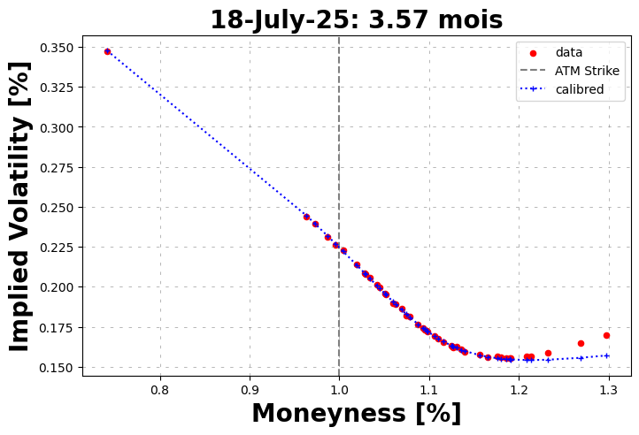

[1]:
from hestonpy.models.heston import Heston
from hestonpy.models.bates import Bates
from hestonpy.models.calibration.volatilitySmile import VolatilitySmile
r = 0.00
Calibration on market data#
Get market data
[2]:
from hestonpy.option.data import get_options_data, filter_data_for_maturity
symbol='^SPX'
all_market_data, spot, maturities = get_options_data(symbol=symbol)
spot
[2]:
np.float64(5664.0498046875)
Choose your smile/maturity
[3]:
maturities
[3]:
('2025-04-02',
'2025-04-03',
'2025-04-04',
'2025-04-07',
'2025-04-08',
'2025-04-09',
'2025-04-10',
'2025-04-11',
'2025-04-14',
'2025-04-15',
'2025-04-16',
'2025-04-17',
'2025-04-21',
'2025-04-22',
'2025-04-23',
'2025-04-24',
'2025-04-25',
'2025-04-28',
'2025-04-29',
'2025-04-30',
'2025-05-01',
'2025-05-02',
'2025-05-05',
'2025-05-06',
'2025-05-08',
'2025-05-09',
'2025-05-16',
'2025-05-30',
'2025-06-20',
'2025-06-30',
'2025-07-18',
'2025-07-31',
'2025-08-15',
'2025-08-29',
'2025-09-19',
'2025-09-30',
'2025-10-17',
'2025-11-21',
'2025-12-19',
'2025-12-31',
'2026-01-16',
'2026-02-20',
'2026-03-20',
'2026-03-31',
'2026-04-17',
'2026-06-18',
'2026-12-18',
'2027-12-17',
'2028-12-15',
'2029-12-21',
'2030-12-20')
[4]:
maturity = maturities[28]
full_market_data = filter_data_for_maturity(all_market_data, maturity)
full_market_data.head()
[4]:
| Call Price | Bid | Ask | Implied Volatility | Strike | Volume | Time to Maturity | Maturity | |
|---|---|---|---|---|---|---|---|---|
| 0 | 5495.40 | 5423.4 | 5439.2 | 0.00001 | 200.0 | 2.0 | 0.22619 | 2025-06-20 |
| 1 | 5208.01 | 5219.9 | 5238.0 | 0.00001 | 400.0 | 1.0 | 0.22619 | 2025-06-20 |
| 2 | 5010.16 | 5021.5 | 5039.6 | 0.00001 | 600.0 | 1.0 | 0.22619 | 2025-06-20 |
| 3 | 4820.39 | 4823.9 | 4842.0 | 0.00001 | 800.0 | 6.0 | 0.22619 | 2025-06-20 |
| 4 | 4608.28 | 4626.4 | 4644.1 | 0.00001 | 1000.0 | 2.0 | 0.22619 | 2025-06-20 |
Sanity check of the data from yfinance
[5]:
time_to_maturity = full_market_data['Time to Maturity'].iloc[0]
strikes = full_market_data['Strike'].values
bid_prices = full_market_data["Bid"].values
ask_prices = full_market_data['Ask'].values
market_ivs = full_market_data['Implied Volatility'].values
market_prices = full_market_data['Call Price'].values
marketVolatilitySmile = VolatilitySmile(
strikes=strikes,
time_to_maturity=time_to_maturity,
atm=spot,
market_ivs=market_ivs,
r=r
)
marketVolatilitySmile.plot(bid_prices=bid_prices, ask_prices=ask_prices)

Hmmm it is ugly, run some filters and use the mid implied volatility to denoise the market,
\[\frac{\sigma_{bid}+\sigma_{ask}}{2}\]
[6]:
market_data = marketVolatilitySmile.filters(full_market_data)
marketVolatilitySmile.plot()
market_data.head()
---------------------------------------------------------------------------
KeyboardInterrupt Traceback (most recent call last)
Cell In[6], line 1
----> 1 market_data = marketVolatilitySmile.filters(full_market_data)
2 marketVolatilitySmile.plot()
3 market_data.head()
File ~/Documents/packages/hestonpy/src/hestonpy/models/calibration/volatilitySmile.py:144, in VolatilitySmile.filters(self, full_market_data, select_mid_ivs)
142 # Ask prices and implied vol
143 ask_prices = full_market_data["Ask"].values
--> 144 ask_ivs = self.compute_smile(ask_prices, strikes)
146 # Mid prices and implied vol
147 mid_ivs = (ask_ivs + bid_ivs) / 2
File ~/Documents/packages/hestonpy/src/hestonpy/models/calibration/volatilitySmile.py:115, in VolatilitySmile.compute_smile(self, prices, strikes)
112 strikes = self.strikes
114 bs = BlackScholes(spot=self.atm, r=self.r, mu=self.r, volatility=0.02)
--> 115 smile = compute_smile(
116 prices=prices,
117 strikes=strikes,
118 time_to_maturity=self.time_to_maturity,
119 bs=bs,
120 flag_option="call",
121 method="dichotomie",
122 )
123 return smile
File ~/Documents/packages/hestonpy/src/hestonpy/models/calibration/_utils.py:98, in compute_smile(prices, strikes, time_to_maturity, bs, flag_option, method)
96 ivs = []
97 for (price, strike) in zip(prices, strikes):
---> 98 iv = reverse_blackScholes(
99 price=price,
100 strike=strike,
101 bs=bs,
102 time_to_maturity=time_to_maturity,
103 flag_option='call',
104 method=method
105 )
106 ivs.append(iv)
108 return np.array(ivs)
File ~/Documents/packages/hestonpy/src/hestonpy/models/calibration/_utils.py:79, in reverse_blackScholes(price, strike, time_to_maturity, bs, flag_option, method)
76 vega_function = lambda volatility: bs.vega(strike=strike, time_to_maturity=time_to_maturity, volatility=volatility)
78 if method == 'dichotomie':
---> 79 iv = dichotomie(market_price=price, price_function=bs_price)
80 elif method == 'newton_raphson':
81 iv = newton_raphson(market_price=price, price_function=bs_price, vega_function=vega_function)
File ~/Documents/packages/hestonpy/src/hestonpy/models/calibration/_utils.py:24, in dichotomie(market_price, price_function, error, vol_inf, vol_sup)
22 while vol_sup - vol_inf > error:
23 vol_mid = (vol_inf + vol_sup)/2
---> 24 if target_function(vol_inf) * target_function(vol_mid) < 0:
25 vol_sup = vol_mid
26 else:
File ~/Documents/packages/hestonpy/src/hestonpy/models/calibration/_utils.py:20, in dichotomie.<locals>.<lambda>(volatility)
9 def dichotomie(
10 market_price,
11 price_function,
(...)
14 vol_sup: float = 1
15 ):
16 """
17 price_function should be only a function of the volatility
18 Note that the price_function is always a croissant function of the volatility
19 """
---> 20 target_function = lambda volatility: price_function(volatility) - market_price
22 while vol_sup - vol_inf > error:
23 vol_mid = (vol_inf + vol_sup)/2
File ~/Documents/packages/hestonpy/src/hestonpy/models/calibration/_utils.py:72, in reverse_blackScholes.<locals>.<lambda>(volatility)
67 """
68 Reverse the Black-Scholes formula, compute the implied volatility from market price.
69 bs should be already initialized with the right strike and maturity.
70 """
71 if flag_option == 'call':
---> 72 bs_price = lambda volatility: bs.call_price(strike=strike, time_to_maturity=time_to_maturity, volatility=volatility)
73 else:
74 bs_price = lambda volatility: bs.put_price(strike=strike, time_to_maturity=time_to_maturity, volatility=volatility)
File ~/Documents/packages/hestonpy/src/hestonpy/models/blackScholes.py:144, in BlackScholes.call_price(self, strike, time_to_maturity, spot, r, volatility)
140 d1 = (np.log(spot / strike) + (r + 0.5 * volatility**2) * time_to_maturity) / (
141 volatility * np.sqrt(time_to_maturity)
142 )
143 d2 = d1 - volatility * np.sqrt(time_to_maturity)
--> 144 return spot * norm.cdf(d1) - strike * np.exp(-r * time_to_maturity) * norm.cdf(d2)
145 else:
146 return np.maximum(0, spot-strike)
File ~/Documents/packages/hestonpy/.venv/lib/python3.10/site-packages/scipy/stats/_distn_infrastructure.py:2128, in rv_continuous.cdf(self, x, *args, **kwds)
2126 args = tuple(map(asarray, args))
2127 _a, _b = self._get_support(*args)
-> 2128 dtyp = np.promote_types(x.dtype, np.float64)
2129 x = np.asarray((x - loc)/scale, dtype=dtyp)
2130 cond0 = self._argcheck(*args) & (scale > 0)
KeyboardInterrupt:
We can now calibrate an Heston model and an Bates model on the cleaned data
Calibration with an Heston model#
[ ]:
params = {
"kappa": 1.25,
"theta": 0.06,
"sigma": 0.6,
"rho": -0.8,
}
heston = Heston(spot=spot, vol_initial=0.06, r=r, drift_emm=0, **params)
initial_params = marketVolatilitySmile.calibration(
price_function=heston.call_price,
guess_correlation_sign='negative',
initial_guess=list(params.values()),
speed='local',
)
initial_guess = [initial_params['kappa'], initial_params['theta'], initial_params['sigma'], initial_params['rho']]
calibrated_params = marketVolatilitySmile.calibration(
price_function=heston.call_price,
guess_correlation_sign='negative',
initial_guess=initial_guess,
power='mse',
speed='global',
)
marketVolatilitySmile.plot(
calibrated_prices=heston.call_price(strike=marketVolatilitySmile.strikes, time_to_maturity=time_to_maturity, **calibrated_params),
maturity=maturity
)
calibrated_params
Calibrated parameters: v0=0.036 | kappa=9.763 | theta=0.063 | sigma=1.832 | rho=-0.807
at minimum 0.023551 accepted 1
Parameters: kappa=9.763 | theta=0.063 | sigma=1.832 | rho=-0.806
at minimum 0.023571 accepted 1
Parameters: kappa=9.894 | theta=0.063 | sigma=1.848 | rho=-0.806
at minimum 0.023614 accepted 1
Parameters: kappa=9.919 | theta=0.063 | sigma=1.854 | rho=-0.806
at minimum 0.023563 accepted 1
Parameters: kappa=9.898 | theta=0.063 | sigma=1.849 | rho=-0.806
at minimum 0.023532 accepted 1
Parameters: kappa=9.870 | theta=0.063 | sigma=1.846 | rho=-0.806
at minimum 0.023557 accepted 1
Parameters: kappa=9.895 | theta=0.063 | sigma=1.849 | rho=-0.806
at minimum 0.024002 accepted 1
Parameters: kappa=9.088 | theta=0.064 | sigma=1.759 | rho=-0.807
at minimum 0.023537 accepted 1
Parameters: kappa=9.880 | theta=0.063 | sigma=1.847 | rho=-0.806
['success condition satisfied'] True
Calibrated parameters: v0=0.036 | kappa=9.870 | theta=0.063 | sigma=1.846 | rho=-0.806

{'vol_initial': np.float64(0.03646176147871301),
'kappa': np.float64(9.869725719029796),
'theta': np.float64(0.06333193499610625),
'sigma': np.float64(1.8457229965916433),
'rho': np.float64(-0.8061467404885212),
'drift_emm': 0}
Calibration with a Baites model#
[ ]:
calibrated_params
{'vol_initial': np.float64(0.03418126258045936),
'kappa': np.float64(1.6524307981357256),
'theta': np.float64(0.001),
'drift_emm': 0,
'sigma': np.float64(0.4948309329882636),
'rho': np.float64(-0.7498716551238577),
'lambda_jump': np.float64(0.1167875695521678),
'mu_J': np.float64(-0.5),
'sigma_J': np.float64(0.3473307538042298)}
[ ]:
params = {
"kappa": 1.25,
"theta": 0.06,
"sigma": 0.6,
"rho": -0.5,
"lambda_jump": 1.0,
"mu_J": -0.1,
'sigma_J': 0.3
}
bates = Bates(spot=spot, vol_initial=0.06, r=r, drift_emm=0, **params)
initial_params = marketVolatilitySmile.calibration(
price_function=bates.call_price,
guess_correlation_sign='negative',
initial_guess=list(params.values()),
power='mse',
speed='local',
)
initial_guess = [initial_params['kappa'], initial_params['theta'], initial_params['sigma'], initial_params['rho'],
initial_params['lambda_jump'], initial_params['mu_J'], initial_params['sigma_J']]
calibrated_params = marketVolatilitySmile.calibration(
price_function=bates.call_price,
guess_correlation_sign='negative',
initial_guess=initial_guess,
power='mse',
speed='global',
)
marketVolatilitySmile.plot(
calibrated_prices=bates.call_price(strike=marketVolatilitySmile.strikes, time_to_maturity=time_to_maturity, **calibrated_params),
maturity=maturity
)
calibrated_params
Calibrated parameters:
v0=0.034 | kappa=1.652 | theta=0.001 | sigma=0.495 | rho=-0.750 | lambda_jump=0.117 | mu_J=-0.500 | sigma_J=0.050
at minimum nan accepted 1
Parameters: kappa=1.652 | theta=0.001 | sigma=0.495 | rho=-0.750 | lambda_jump=0.117 | mu_J=-0.500 | sigma_J=0.050
at minimum 0.732971 accepted 1
Parameters: kappa=1.652 | theta=0.001 | sigma=0.495 | rho=-0.750 | lambda_jump=0.117 | mu_J=-0.500 | sigma_J=0.347
at minimum 0.732971 accepted 1
Parameters: kappa=1.652 | theta=0.001 | sigma=0.495 | rho=-0.750 | lambda_jump=0.117 | mu_J=-0.500 | sigma_J=0.347
at minimum 0.734213 accepted 1
Parameters: kappa=1.758 | theta=0.003 | sigma=0.499 | rho=-0.751 | lambda_jump=0.117 | mu_J=-0.500 | sigma_J=0.349
at minimum 0.732971 accepted 1
Parameters: kappa=1.652 | theta=0.001 | sigma=0.495 | rho=-0.750 | lambda_jump=0.117 | mu_J=-0.500 | sigma_J=0.347
['success condition satisfied'] True
Calibrated parameters:
v0=0.034 | kappa=1.652 | theta=0.001 | sigma=0.495 | rho=-0.750 | lambda_jump=0.117 | mu_J=-0.500 | sigma_J=0.347

{'vol_initial': np.float64(0.03418126258045936),
'kappa': np.float64(1.6524340301076816),
'theta': np.float64(0.001),
'drift_emm': 0,
'sigma': np.float64(0.49483092969382403),
'rho': np.float64(-0.7498713974833794),
'lambda_jump': np.float64(0.11678766889964226),
'mu_J': np.float64(-0.5),
'sigma_J': np.float64(0.34733044904436533)}
Fancy plot
[ ]:
from datetime import datetime
import numpy as np
import matplotlib.pyplot as plt
import matplotlib.font_manager as font_manager
font_legend = font_manager.FontProperties(
style='normal',
size=20,
)
fontdict = {
"fontsize": 20,
# "fontweight": "bold"
}
fontdict_suptitle = {
'fontsize': 30,
'fontweight': 'bold'
}
fontdict_title = {
'fontsize': 30,
'fontweight': 'bold'
}
calibrated_prices = bates.call_price(strike=marketVolatilitySmile.strikes, time_to_maturity=time_to_maturity, **calibrated_params)
calibrated_ivs = marketVolatilitySmile.compute_smile(prices=calibrated_prices)
ask_ivs = market_data['Ask ivs'].values
bid_ivs = market_data['Bid ivs'].values
forward = marketVolatilitySmile.atm * np.exp(marketVolatilitySmile.r * marketVolatilitySmile.time_to_maturity)
plt.figure(figsize=(15, 10))
plt.axvline(1, linestyle="--", color="gray", label='ATM')
plt.plot(marketVolatilitySmile.strikes / forward, calibrated_ivs, marker='+', color='#2c6089', linestyle="dotted", markersize=14, linewidth=2, label='calibrated')
plt.scatter(marketVolatilitySmile.strikes / forward, marketVolatilitySmile.market_ivs, marker='o', color='red', s=20, label='market')
plt.scatter(marketVolatilitySmile.strikes / forward, bid_ivs, marker=6, color='black', s=40, label='bid')
plt.scatter(marketVolatilitySmile.strikes / forward, ask_ivs, marker=7, color='gray', s=40, label='ask')
plt.xlabel("Moneyness [%]", fontdict=fontdict)
plt.ylabel("Implied Volatility [%]", fontdict=fontdict)
plt.xlim((0.65, 1.35))
date = datetime.strptime(maturity, '%Y-%m-%d').date().strftime("%d-%B-%y")
title = f"{symbol} Maturity {date}"
plt.suptitle(title, fontsize=35, fontweight='bold', color='#2c6089')
plt.title(f"in {marketVolatilitySmile.time_to_maturity * 252 / 5:.1f} weeks", color="grey", style='italic', fontsize=25)
plt.grid(visible=True, which="major", linestyle="--", dashes=(5, 10), color="gray", linewidth=0.5, alpha=0.8)
plt.legend(fontsize=15)
plt.tight_layout()
plt.show()